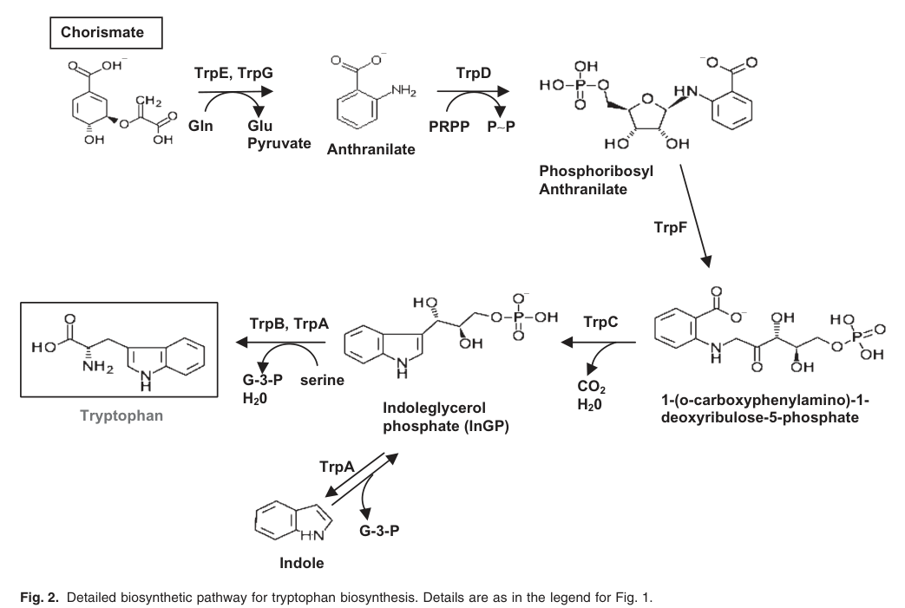

Indole-3-glycerol phosphate synthase (IGPS; TrpC; EC 4.1.1.48), the enzyme catalyzing the fourth step of L-tryptophan biosynthesis. It converts 1-(2-carboxyphenylamino)-1-deoxy-D-ribulose 5-phosphate (CdRP) into (1S,2R)-1-C-(indol-3-yl)glycerol 3-phosphate (indole-3-glycerol phosphate, IGP), releasing CO2 and water in an irreversible decarboxylative ring-closure reaction. This indole-ring-forming step lies downstream of anthranilate phosphoribosyltransferase (TrpD) and upstream of the tryptophan synthase subunits (TrpA/TrpB). The protein adopts a classic (beta/alpha)8 TIM-barrel (ribulose-phosphate-binding barrel) fold and acts as a soluble cytoplasmic metabolic enzyme. In Pseudomonas putida KT2440 the gene (PP_0422) lies in the trpGDC operon, and loss-of-function insertions cause tryptophan auxotrophy. The enzyme family is highly conserved across bacteria and has no human homolog.
| GO Term | Evidence | Action | Reason |
|---|---|---|---|
|
GO:0000162
L-tryptophan biosynthetic process
|
IEA
GO_REF:0000120 |
ACCEPT |
Summary: TrpC/IGPS catalyzes the fourth step of L-tryptophan biosynthesis; this process annotation is correct and represents a core function of the gene.
Reason: Matches the UniProt-curated pathway annotation (L-tryptophan from chorismate, step 4/5) and is supported by tryptophan-auxotrophy phenotypes of PP_0422 insertion mutants in P. putida KT2440. This is a core function.
|
|
GO:0004425
indole-3-glycerol-phosphate synthase activity
|
IEA
GO_REF:0000120 |
ACCEPT |
Summary: This is the canonical molecular function of TrpC, matching the UniProt RecName (Indole-3-glycerol phosphate synthase, EC 4.1.1.48) and the curated catalytic activity (CdRP to indole-3-glycerol phosphate + CO2 + H2O).
Reason: Directly supported by UniProt HAMAP-Rule MF_00134, InterPro IGPS domain signatures (IPR001468/IPR013798/IPR045186), EC 4.1.1.48 and RHEA:23476. Core molecular function.
|
|
GO:0004640
phosphoribosylanthranilate isomerase activity
|
IEA
GO_REF:0000118 |
REMOVE |
Summary: Phosphoribosylanthranilate isomerase (PRAI, TrpF, EC 5.3.1.24) catalyzes the third step of tryptophan biosynthesis and is a distinct activity from IGPS. This activity is NOT supported for P. putida KT2440 TrpC by UniProt, which assigns only IGPS (EC 4.1.1.48). The annotation is a TreeGrafter over-propagation arising because some bacteria (e.g. E. coli) have a bifunctional TrpC(F) protein, whereas in Pseudomonas TrpF is a separate gene.
Reason: UniProt Q88QR6 (HAMAP MF_00134) annotates only the monofunctional IGPS activity (277 aa, single IGPS domain), with no PRAI/TrpF domain. The IEA TreeGrafter inference reflects the bifunctional TrpCF architecture of some lineages and is not applicable to this monofunctional Pseudomonas enzyme. This is an electronic (IEA) prediction argued against on biological/domain grounds, not the second-guessing of an experimental annotation.
|
Q: Has the IGPS activity of P. putida KT2440 TrpC (PP_0422) been biochemically characterized (kcat/KM), or is the assignment based solely on homology and the auxotrophy phenotype?
Experiment: Purify recombinant PP_0422 and measure IGPS activity (CdRP to IGP) to confirm the monofunctional assignment and exclude any cryptic PRAI activity.
This report is retrieval-only and is generated directly from Asta results.
search_papers_by_relevance with snippet_search.The research report should be a detailed narrative explaining the function, biological processes, and localization of the gene product. Citations should be given for all claims.
You should prioritize authoritative reviews and primary scientific literature when conducting research. You can supplement
this with annotations you find in gene/protein databases, but these can be outdated or inaccurate.
We are specifically interested in the primary function of the gene - for enzymes, what reaction is catalyzed, and what is the substrate specificity? For transporters, what is the substrate? For structural proteins or adapters, what is the broader structural role? For signaling molecules, what is the role in the pathway.
We are interested in where in or outside the cell the gene product carries out its function.
We are also interested in the signaling or biochemical pathways in which the gene functions. We are less interested in broad pleiotropic effects, except where these elucidate the precise role.
Include evidence where possible. We are interested in both experimental evidence as well as inference from structure, evolution, or bioinformatic analysis. Precise studies should be prioritized over high-throughput, where available.
Target identity (confirmed): The gene symbol trpC in this report refers specifically to PP_0422 from Pseudomonas putida strain KT2440 (ATCC 47054 / DSM 6125 / etc.), annotated in UniProt as indole-3-glycerol phosphate synthase (IGPS; EC 4.1.1.48). Multiple independent lines of KT2440-specific evidence support this assignment: PP_0422 lies in the trpGDC tryptophan-biosynthesis operon, shows high similarity to characterized TrpC from E. coli, and loss-of-function insertions in PP_0422 yield tryptophan auxotrophy. (molinahenares2009functionalanalysisof pages 2-4, molinahenares2009functionalanalysisof pages 1-2)
Why ambiguity matters: “trpC” is a widely used bacterial symbol; some taxa have fused or multifunctional proteins combining TrpC with other activities, or gene fusions in related pathways. Therefore, all organism-specific conclusions below are restricted to KT2440 PP_0422/Q88QR6. (barona‐gomez2003occurrenceofa pages 1-2, molinahenares2009functionalanalysisof pages 2-4)
Indole-3-glycerol phosphate synthase (IGPS; TrpC; EC 4.1.1.48) catalyzes the indole-ring-forming step of microbial tryptophan biosynthesis by converting 1-(o-carboxyphenylamino)-1-deoxyribulose 5′-phosphate (CdRP) into indole-3-glycerol phosphate (IGP; also abbreviated InGP). (esposito2022indole‐3‐glycerolphosphatesynthase pages 1-3, molinahenares2009functionalanalysisof pages 4-6)
In P. putida KT2440, pathway mapping places TrpC downstream of TrpD (anthranilate phosphoribosyltransferase) and upstream of TrpA/TrpB (tryptophan synthase subunits), consistent with the standard chorismate→anthranilate→tryptophan route. (molinahenares2009functionalanalysisof pages 4-6, molinahenares2009functionalanalysisof media a5651e48)
A KT2440 genetic and biochemical reconstruction supports a single route from chorismate to tryptophan, with the trp genes arranged in operons and single-gene transcription units characteristic of many bacteria. (molinahenares2009functionalanalysisof pages 1-2, molinahenares2009functionalanalysisof pages 4-6)
Figure evidence: the tryptophan pathway and trp gene organization in KT2440 (including trpGDC with trpC/PP_0422) are shown in extracted figures from Molina-Henares et al. (2009). (molinahenares2009functionalanalysisof media a5651e48, molinahenares2009functionalanalysisof media 77d9c78a)
IGPS/TrpC is functionally defined by its specificity for the pathway intermediate CdRP, producing IGP. This is the enzyme’s core substrate/product relationship in bacteria. (esposito2022indole‐3‐glycerolphosphatesynthase pages 1-3)
In KT2440, TrpC is explicitly identified as indoleglycerol phosphate synthase within the reconstructed pathway and gene cluster, supporting that PP_0422 participates in this exact chemistry rather than a divergent TrpC-like function. (molinahenares2009functionalanalysisof pages 4-6, molinahenares2009functionalanalysisof pages 2-4)
A detailed minireview of bacterial IGPS (focused on Mycobacterium tuberculosis IGPS but comparing across homologs) describes IGPS as a (β/α)8 TIM-barrel enzyme (a classic aldolase/TIM-barrel scaffold). (esposito2022indole‐3‐glycerolphosphatesynthase pages 1-3, esposito2022indole‐3‐glycerolphosphatesynthase pages 4-6)
Mechanistic consensus (3-step sequence): cyclization to an intermediate, irreversible decarboxylation, and dehydration to yield IGP. (esposito2022indole‐3‐glycerolphosphatesynthase pages 3-4)
Catalytic residue-level insights (from structural/kinetic studies of bacterial IGPS): conserved Lys/Glu residues participate in proton transfers and dehydration; structural data identify phosphate-binding and indole-stabilizing interactions in the active site (e.g., H-bonding and π-cation interactions) as part of the conserved catalytic architecture. (esposito2022indole‐3‐glycerolphosphatesynthase pages 3-4, esposito2022indole‐3‐glycerolphosphatesynthase pages 4-6)
Quantitative kinetic data (example bacterial IGPS, not KT2440-specific): for MtIGPS, reported KM values vary substantially across studies (e.g., 55 μM vs. 500 μM vs. 1.13 mM) and a reported kcat ≈ 0.16 s−1 (25 °C); pH dependence indicates apparent pKa values around ~6–6.8 for catalytic parameters. These figures illustrate that IGPS kinetics are sensitive to assay and substrate preparation, and should not be transferred quantitatively to KT2440 without direct measurement. (esposito2022indole‐3‐glycerolphosphatesynthase pages 3-4, esposito2022indole‐3‐glycerolphosphatesynthase pages 1-3)
In P. putida KT2440, trpC = PP_0422 is within a compact operon trpG–trpD–trpC (trpGDC), with very short intergenic distances (including a 6-nt overlap between trpD and trpC) and RT-PCR evidence for cotranscription of trpGDC. (molinahenares2009functionalanalysisof pages 2-4, molinahenares2009functionalanalysisof pages 4-6)
This organization supports functional coupling with upstream tryptophan-branch reactions and is consistent with tight pathway control at the transcriptional/operon level. (molinahenares2009functionalanalysisof pages 4-6, molinahenares2009functionalanalysisof media 77d9c78a)
A genome-wide mini-Tn5 screen in KT2440 identified tryptophan auxotrophs with insertions in multiple trp genes, including a PP_0422 (trpC) insertion at the 32nd codon leading to tryptophan requirement. This is direct genetic evidence that PP_0422 is essential for endogenous tryptophan biosynthesis under the tested minimal conditions. (molinahenares2009functionalanalysisof pages 1-2, molinahenares2009functionalanalysisof pages 2-4)
Tryptophan-pathway enzymes in Pseudomonas were reported as highly conserved (71–97% identity range across species for pathway enzymes), supporting functional conservation of TrpC/IGPS across the genus and lending additional confidence to annotation transfer. (molinahenares2009functionalanalysisof pages 4-6)
No direct experimental subcellular localization (e.g., fractionation, microscopy, localization tags) for KT2440 TrpC (PP_0422/Q88QR6) was found in the retrieved full-text evidence. (molinahenares2009functionalanalysisof pages 4-6, molinahenares2009functionalanalysisof pages 2-4)
Given its role in central amino-acid biosynthesis and the fact that bacterial tryptophan-biosynthesis enzymes are generally soluble metabolic enzymes, the most parsimonious functional inference is that TrpC acts in the cytosol; however, this remains an inference rather than a demonstrated localization for KT2440 in the currently retrieved literature. (molinahenares2009functionalanalysisof pages 4-6)
A practical, KT2440-specific application of trpC knowledge is pathway rerouting at the chorismate→anthranilate→tryptophan node.
Kuepper et al. (2015) engineered P. putida KT2440 for anthranilate (o-aminobenzoate; oAB) production from glucose by deleting the trpDC operon, explicitly described as encoding TrpD (anthranilate phosphoribosyltransferase) and TrpC (IGPS). This deletion blocks anthranilate consumption toward tryptophan. (kuepper2015metabolicengineeringof pages 1-2)
Quantitative outcome: with additional pathway deregulation (feedback-insensitive aroG and modified trpE/trpS context as described), the best engineered strain achieved 1.54 ± 0.3 g/L (11.23 mM) anthranilate in tryptophan-limited fed-batch culture. This is a direct, real-world strain-engineering use-case for trpC functional annotation in KT2440. (kuepper2015metabolicengineeringof pages 1-2)
A 2024 preprint/report describes reprogramming P. putida catabolism to rely on the shikimate pathway (normally anabolic) as a primary route for growth-associated pyruvate supply (“shikimate pathway-dependent catabolism”, SDC). The study combined metabolic modeling, rational engineering, and adaptive laboratory evolution (ALE) with biosensor-based selection, achieving ~89% of the pathway’s maximum theoretical yield for an aromatic product (4-hydroxybenzoate). (bruinsma2024shikimatepathwaydependentcatabolism pages 1-4, santos2024shikimatepathwaydependentcatabolism pages 1-5)
This work is not a direct study of trpC, but it is highly relevant to the tryptophan branch because it demonstrates that modern strategies can drive very high flux through chorismate/shikimate-derived nodes in P. putida. It also highlights design constraints: deleting certain chorismate-derived reactions (e.g., anthranilate synthase routes) is infeasible because it would create auxotrophies, underscoring the physiological coupling of aromatic product formation to essential metabolites like tryptophan. (bruinsma2024shikimatepathwaydependentcatabolism pages 4-6)
A 2023 metabolic engineering study in Corynebacterium glutamicum optimized shikimate-derived production and explicitly addressed anthranilate accumulation (a tryptophan-branch metabolite) by reducing anthranilate synthase activity via targeted mutagenesis while avoiding tryptophan auxotrophy; the study achieved 661 mg/L (4 mM) p-coumaric acid and demonstrated co-culture conversion to 31.2 mg/L resveratrol. While not in P. putida, these results reflect current engineering practice at the aromatic branchpoint where trp genes (including trpC) are often manipulated to tune flux. (mutz2023microbialsynthesisof pages 1-2)
A focused minireview (ChemBioChem, 2022) frames IGPS as a highly conserved TIM-barrel enzyme, summarizes evidence for its mechanism and structural determinants, and argues that bacterial IGPS can be a useful antibacterial target because some pathogens rely on tryptophan biosynthesis during host immune pressure and because the enzyme lacks a human homolog. Although discussed in a tuberculosis context, these points represent authoritative expert synthesis of IGPS enzymology and structure–function relationships. (esposito2022indole‐3‐glycerolphosphatesynthase pages 1-3)
Molina-Henares et al. (2009) provide a KT2440-specific, experimentally grounded approach to functional annotation that combines operon mapping (RT-PCR), mutant phenotypes, and pathway logic. This type of evidence is particularly strong for essential metabolic enzymes like TrpC even when purified-enzyme kinetics for the exact strain are not available. (molinahenares2009functionalanalysisof pages 2-4, molinahenares2009functionalanalysisof pages 1-2)
| Feature | Key finding | Best citation IDs to support it | Source (author/year/doi URL) |
|---|---|---|---|
| Enzyme name | trpC / PP_0422 / UniProt Q88QR6 in Pseudomonas putida KT2440 is assigned as indole-3-glycerol phosphate synthase (IGPS) based on sequence similarity to E. coli TrpC and placement in the tryptophan biosynthesis locus. | (molinahenares2009functionalanalysisof pages 2-4) | Molina-Henares et al., 2009, Microbial Biotechnology, https://doi.org/10.1111/j.1751-7915.2008.00062.x |
| EC number | The gene product corresponds to EC 4.1.1.48, the canonical IGPS carboxy-lyase in tryptophan biosynthesis. This matches the functional assignment used in comparative and pathway literature. | (esposito2022indole‐3‐glycerolphosphatesynthase pages 3-4, barona‐gomez2003occurrenceofa pages 1-2) | Esposito et al., 2022, ChemBioChem, https://doi.org/10.1002/cbic.202100314; Barona-Gómez & Hodgson, 2003, EMBO Reports, https://doi.org/10.1038/sj.embor.embor771 |
| Reaction | IGPS catalyzes conversion of 1-(o-carboxyphenylamino)-1-deoxyribulose-5-phosphate (CdRP) to indole-3-glycerol phosphate (IGP/InGP), the indole-ring-forming step of the pathway. | (esposito2022indole‐3‐glycerolphosphatesynthase pages 3-4, esposito2022indole‐3‐glycerolphosphatesynthase pages 1-3) | Esposito et al., 2022, ChemBioChem, https://doi.org/10.1002/cbic.202100314 |
| Substrate/product | The substrate is CdRP and the product is IGP/InGP; in the KT2440 pathway map, TrpC is explicitly positioned at the step producing indoleglycerol phosphate from the upstream anthranilate-derived intermediate. | (molinahenares2009functionalanalysisof pages 4-6, esposito2022indole‐3‐glycerolphosphatesynthase pages 1-3) | Molina-Henares et al., 2009, https://doi.org/10.1111/j.1751-7915.2008.00062.x; Esposito et al., 2022, https://doi.org/10.1002/cbic.202100314 |
| Pathway step | TrpC functions in the tryptophan biosynthetic pathway downstream of TrpD and upstream of TrpA/TrpB, converting the anthranilate branch intermediate into IGP before terminal tryptophan synthase steps. | (molinahenares2009functionalanalysisof pages 4-6, molinahenares2009functionalanalysisof media a5651e48) | Molina-Henares et al., 2009, Microbial Biotechnology, https://doi.org/10.1111/j.1751-7915.2008.00062.x |
| Operon context | In KT2440, trpC is part of the trpGDC operon; RT-PCR showed cotranscription of trpG-trpD-trpC, and trpD overlaps trpC by 6 nt, indicating tight transcriptional/functional coupling. | (molinahenares2009functionalanalysisof pages 2-4, molinahenares2009functionalanalysisof pages 4-6) | Molina-Henares et al., 2009, Microbial Biotechnology, https://doi.org/10.1111/j.1751-7915.2008.00062.x |
| Evidence type | Functional annotation is supported by genome context, RT-PCR operon mapping, sequence similarity, pathway reconstruction, and mutant phenotype analysis rather than direct biochemical characterization of the purified KT2440 enzyme. | (molinahenares2009functionalanalysisof pages 2-4, molinahenares2009functionalanalysisof pages 7-8) | Molina-Henares et al., 2009, Microbial Biotechnology, https://doi.org/10.1111/j.1751-7915.2008.00062.x |
| Phenotype | Loss of trpC causes tryptophan auxotrophy in KT2440: a mini-Tn5 insertion in PP_0422 yielded an auxotrophic mutant in the aromatic-pathway screen. | (molinahenares2009functionalanalysisof pages 1-2) | Molina-Henares et al., 2009, Microbial Biotechnology, https://doi.org/10.1111/j.1751-7915.2008.00062.x |
| Applications / metabolic engineering | Deleting trpDC (including trpC) in KT2440 was used to block anthranilate consumption and redirect flux for product formation; the best engineered strain produced 1.54 ± 0.3 g/L (11.23 mM) anthranilate in tryptophan-limited fed-batch culture. | (kuepper2015metabolicengineeringof pages 1-2) | Kuepper et al., 2015, Frontiers in Microbiology, https://doi.org/10.3389/fmicb.2015.01310 |
| Structure / domains | TrpC/IGPS is a (β/α)8 TIM-barrel enzyme with a conserved catalytic architecture. The UniProt/domain assignment for Q88QR6 is consistent with this family-level structural model, although no KT2440-specific structure was identified here. | (esposito2022indole‐3‐glycerolphosphatesynthase pages 3-4, esposito2022indole‐3‐glycerolphosphatesynthase pages 4-6, kursula2003crystallographicstudieson pages 28-30) | Esposito et al., 2022, ChemBioChem, https://doi.org/10.1002/cbic.202100314; Kursula, 2003 |
| Localization | No direct KT2440 localization experiment was found in the retrieved evidence. Given its role in central amino-acid biosynthesis and lack of membrane/export features in the discussed sources, TrpC is best inferred to function in the cytosol. | (molinahenares2009functionalanalysisof pages 4-6, molinahenares2009functionalanalysisof pages 2-4) | Molina-Henares et al., 2009, Microbial Biotechnology, https://doi.org/10.1111/j.1751-7915.2008.00062.x |
| Recent 2023–2024 relevance | Recent work did not directly recharacterize KT2440 TrpC, but 2024 shikimate-pathway rewiring in P. putida showed that flux through chorismate-derived aromatics can reach 89% of theoretical yield, highlighting the modern engineering context in which trpC-associated branch control remains important. | (santos2024shikimatepathwaydependentcatabolism pages 1-5, bruinsma2024shikimatepathwaydependentcatabolism pages 1-4) | dos Santos et al., 2024, https://doi.org/10.21203/rs.3.rs-4761679/v1; Bruinsma et al., 2024, bioRxiv, https://doi.org/10.1101/2024.07.06.602327 |
Table: This table summarizes the experimentally supported functional annotation of Pseudomonas putida KT2440 trpC (PP_0422; UniProt Q88QR6), including pathway role, operon context, phenotype, structural inference, and engineering relevance. It is useful as a compact evidence map for gene-function annotation.
References
(molinahenares2009functionalanalysisof pages 2-4): M. A. Molina-Henares, Adela García‐Salamanca, A. Molina-Henares, J. de la Torre, M. C. Herrera, J. Ramos, and E. Duque. Functional analysis of aromatic biosynthetic pathways in pseudomonas putida kt2440. Microbial biotechnology, 2:91-100, Dec 2009. URL: https://doi.org/10.1111/j.1751-7915.2008.00062.x, doi:10.1111/j.1751-7915.2008.00062.x. This article has 32 citations and is from a peer-reviewed journal.
(molinahenares2009functionalanalysisof pages 1-2): M. A. Molina-Henares, Adela García‐Salamanca, A. Molina-Henares, J. de la Torre, M. C. Herrera, J. Ramos, and E. Duque. Functional analysis of aromatic biosynthetic pathways in pseudomonas putida kt2440. Microbial biotechnology, 2:91-100, Dec 2009. URL: https://doi.org/10.1111/j.1751-7915.2008.00062.x, doi:10.1111/j.1751-7915.2008.00062.x. This article has 32 citations and is from a peer-reviewed journal.
(barona‐gomez2003occurrenceofa pages 1-2): Francisco Barona‐Gómez and David A Hodgson. Occurrence of a putative ancient‐like isomerase involved in histidine and tryptophan biosynthesis. EMBO reports, 4:296-300, Mar 2003. URL: https://doi.org/10.1038/sj.embor.embor771, doi:10.1038/sj.embor.embor771. This article has 119 citations and is from a highest quality peer-reviewed journal.
(esposito2022indole‐3‐glycerolphosphatesynthase pages 1-3): Nikolas Esposito, David W. Konas, and Nina M. Goodey. Indole‐3‐glycerol phosphate synthase from mycobacterium tuberculosis: a potential new drug target. Sep 2022. URL: https://doi.org/10.1002/cbic.202100314, doi:10.1002/cbic.202100314. This article has 5 citations and is from a peer-reviewed journal.
(molinahenares2009functionalanalysisof pages 4-6): M. A. Molina-Henares, Adela García‐Salamanca, A. Molina-Henares, J. de la Torre, M. C. Herrera, J. Ramos, and E. Duque. Functional analysis of aromatic biosynthetic pathways in pseudomonas putida kt2440. Microbial biotechnology, 2:91-100, Dec 2009. URL: https://doi.org/10.1111/j.1751-7915.2008.00062.x, doi:10.1111/j.1751-7915.2008.00062.x. This article has 32 citations and is from a peer-reviewed journal.
(molinahenares2009functionalanalysisof media a5651e48): M. A. Molina-Henares, Adela García‐Salamanca, A. Molina-Henares, J. de la Torre, M. C. Herrera, J. Ramos, and E. Duque. Functional analysis of aromatic biosynthetic pathways in pseudomonas putida kt2440. Microbial biotechnology, 2:91-100, Dec 2009. URL: https://doi.org/10.1111/j.1751-7915.2008.00062.x, doi:10.1111/j.1751-7915.2008.00062.x. This article has 32 citations and is from a peer-reviewed journal.
(molinahenares2009functionalanalysisof media 77d9c78a): M. A. Molina-Henares, Adela García‐Salamanca, A. Molina-Henares, J. de la Torre, M. C. Herrera, J. Ramos, and E. Duque. Functional analysis of aromatic biosynthetic pathways in pseudomonas putida kt2440. Microbial biotechnology, 2:91-100, Dec 2009. URL: https://doi.org/10.1111/j.1751-7915.2008.00062.x, doi:10.1111/j.1751-7915.2008.00062.x. This article has 32 citations and is from a peer-reviewed journal.
(esposito2022indole‐3‐glycerolphosphatesynthase pages 4-6): Nikolas Esposito, David W. Konas, and Nina M. Goodey. Indole‐3‐glycerol phosphate synthase from mycobacterium tuberculosis: a potential new drug target. Sep 2022. URL: https://doi.org/10.1002/cbic.202100314, doi:10.1002/cbic.202100314. This article has 5 citations and is from a peer-reviewed journal.
(esposito2022indole‐3‐glycerolphosphatesynthase pages 3-4): Nikolas Esposito, David W. Konas, and Nina M. Goodey. Indole‐3‐glycerol phosphate synthase from mycobacterium tuberculosis: a potential new drug target. Sep 2022. URL: https://doi.org/10.1002/cbic.202100314, doi:10.1002/cbic.202100314. This article has 5 citations and is from a peer-reviewed journal.
(kuepper2015metabolicengineeringof pages 1-2): Jannis Kuepper, Jasmin Dickler, Michael Biggel, Swantje Behnken, Gernot Jäger, Nick Wierckx, and Lars M. Blank. Metabolic engineering of pseudomonas putida kt2440 to produce anthranilate from glucose. Frontiers in Microbiology, Nov 2015. URL: https://doi.org/10.3389/fmicb.2015.01310, doi:10.3389/fmicb.2015.01310. This article has 66 citations and is from a peer-reviewed journal.
(bruinsma2024shikimatepathwaydependentcatabolism pages 1-4): Lyon Bruinsma, Christos Batianis, Sara Moreno Paz, Kesi Kurnia, Job. J Dirkmaat, Alexandra Müller, Jose Juncosa Nunez, Ruud A. Weusthuis, and Vitor A. P. Martins dos Santos. Shikimate pathway-dependent catabolism: enabling near-to-maximum production yield of aromatics. BioRxiv, Jul 2024. URL: https://doi.org/10.1101/2024.07.06.602327, doi:10.1101/2024.07.06.602327. This article has 0 citations.
(santos2024shikimatepathwaydependentcatabolism pages 1-5): Vitor Martins dos Santos, Lyon Bruinsma, Christos Batianis, Sara Moreno-Paz, Kesi Kurnia, Job Dirkmaat, Alexandra Müller, Jose Juncosa Nuñez, and Ruud Weusthuis. Shikimate pathway-dependent catabolism: enabling near-to-maximum production yield of aromatics. Unknown journal, Aug 2024. URL: https://doi.org/10.21203/rs.3.rs-4761679/v1, doi:10.21203/rs.3.rs-4761679/v1.
(bruinsma2024shikimatepathwaydependentcatabolism pages 4-6): Lyon Bruinsma, Christos Batianis, Sara Moreno Paz, Kesi Kurnia, Job. J Dirkmaat, Alexandra Müller, Jose Juncosa Nunez, Ruud A. Weusthuis, and Vitor A. P. Martins dos Santos. Shikimate pathway-dependent catabolism: enabling near-to-maximum production yield of aromatics. BioRxiv, Jul 2024. URL: https://doi.org/10.1101/2024.07.06.602327, doi:10.1101/2024.07.06.602327. This article has 0 citations.
(mutz2023microbialsynthesisof pages 1-2): Mario Mutz, Dominic Kösters, Benedikt Wynands, Nick Wierckx, and Jan Marienhagen. Microbial synthesis of the plant natural product precursor p-coumaric acid with corynebacterium glutamicum. Microbial Cell Factories, Oct 2023. URL: https://doi.org/10.1186/s12934-023-02222-y, doi:10.1186/s12934-023-02222-y. This article has 24 citations and is from a peer-reviewed journal.
(molinahenares2009functionalanalysisof pages 7-8): M. A. Molina-Henares, Adela García‐Salamanca, A. Molina-Henares, J. de la Torre, M. C. Herrera, J. Ramos, and E. Duque. Functional analysis of aromatic biosynthetic pathways in pseudomonas putida kt2440. Microbial biotechnology, 2:91-100, Dec 2009. URL: https://doi.org/10.1111/j.1751-7915.2008.00062.x, doi:10.1111/j.1751-7915.2008.00062.x. This article has 32 citations and is from a peer-reviewed journal.
(kursula2003crystallographicstudieson pages 28-30): I Kursula. Crystallographic studies on the structure-function relationships in triosephosphate isomerase. Unknown journal, 2003.

id: Q88QR6
gene_symbol: trpC
product_type: PROTEIN
status: DRAFT
taxon:
id: NCBITaxon:160488
label: Pseudomonas putida (strain ATCC 47054 / DSM 6125 / CFBP 8728 / NCIMB 11950 / KT2440)
description: >-
Indole-3-glycerol phosphate synthase (IGPS; TrpC; EC 4.1.1.48), the enzyme
catalyzing the fourth step of L-tryptophan biosynthesis. It converts
1-(2-carboxyphenylamino)-1-deoxy-D-ribulose 5-phosphate (CdRP) into
(1S,2R)-1-C-(indol-3-yl)glycerol 3-phosphate (indole-3-glycerol phosphate, IGP),
releasing CO2 and water in an irreversible decarboxylative ring-closure reaction.
This indole-ring-forming step lies downstream of anthranilate
phosphoribosyltransferase (TrpD) and upstream of the tryptophan synthase subunits
(TrpA/TrpB). The protein adopts a classic (beta/alpha)8 TIM-barrel
(ribulose-phosphate-binding barrel) fold and acts as a soluble cytoplasmic
metabolic enzyme. In Pseudomonas putida KT2440 the gene (PP_0422) lies in the
trpGDC operon, and loss-of-function insertions cause tryptophan auxotrophy. The
enzyme family is highly conserved across bacteria and has no human homolog.
existing_annotations:
- term:
id: GO:0000162
label: L-tryptophan biosynthetic process
evidence_type: IEA
original_reference_id: GO_REF:0000120
qualifier: involved_in
review:
summary: TrpC/IGPS catalyzes the fourth step of L-tryptophan biosynthesis; this process annotation is correct and represents a core function of the gene.
action: ACCEPT
reason: Matches the UniProt-curated pathway annotation (L-tryptophan from chorismate, step 4/5) and is supported by tryptophan-auxotrophy phenotypes of PP_0422 insertion mutants in P. putida KT2440. This is a core function.
- term:
id: GO:0004425
label: indole-3-glycerol-phosphate synthase activity
evidence_type: IEA
original_reference_id: GO_REF:0000120
qualifier: enables
review:
summary: This is the canonical molecular function of TrpC, matching the UniProt RecName (Indole-3-glycerol phosphate synthase, EC 4.1.1.48) and the curated catalytic activity (CdRP to indole-3-glycerol phosphate + CO2 + H2O).
action: ACCEPT
reason: Directly supported by UniProt HAMAP-Rule MF_00134, InterPro IGPS domain signatures (IPR001468/IPR013798/IPR045186), EC 4.1.1.48 and RHEA:23476. Core molecular function.
- term:
id: GO:0004640
label: phosphoribosylanthranilate isomerase activity
evidence_type: IEA
original_reference_id: GO_REF:0000118
qualifier: enables
review:
summary: Phosphoribosylanthranilate isomerase (PRAI, TrpF, EC 5.3.1.24) catalyzes the third step of tryptophan biosynthesis and is a distinct activity from IGPS. This activity is NOT supported for P. putida KT2440 TrpC by UniProt, which assigns only IGPS (EC 4.1.1.48). The annotation is a TreeGrafter over-propagation arising because some bacteria (e.g. E. coli) have a bifunctional TrpC(F) protein, whereas in Pseudomonas TrpF is a separate gene.
action: REMOVE
reason: UniProt Q88QR6 (HAMAP MF_00134) annotates only the monofunctional IGPS activity (277 aa, single IGPS domain), with no PRAI/TrpF domain. The IEA TreeGrafter inference reflects the bifunctional TrpCF architecture of some lineages and is not applicable to this monofunctional Pseudomonas enzyme. This is an electronic (IEA) prediction argued against on biological/domain grounds, not the second-guessing of an experimental annotation.
core_functions:
- description: Catalyzes the fourth step of L-tryptophan biosynthesis, the decarboxylative ring closure of CdRP to indole-3-glycerol phosphate.
supported_by:
- reference_id: GO_REF:0000120
supporting_text: UniProt RecName Indole-3-glycerol phosphate synthase, EC 4.1.1.48; catalytic activity CdRP to (indol-3-yl)glycerol 3-phosphate + CO2 + H2O (RHEA:23476).
molecular_function:
id: GO:0004425
label: indole-3-glycerol-phosphate synthase activity
directly_involved_in:
- id: GO:0000162
label: L-tryptophan biosynthetic process
references:
- id: GO_REF:0000118
title: TreeGrafter-generated GO annotations
findings: []
reference_review:
relevance: LOW
correctness: VERIFIED
review_notes: TreeGrafter pipeline reference; correctly identifies the source of the PRAI over-propagated annotation, which is not applicable to this monofunctional enzyme.
- id: GO_REF:0000120
title: Combined Automated Annotation using Multiple IEA Methods
findings: []
reference_review:
relevance: HIGH
correctness: VERIFIED
review_notes: Source of the IGPS and tryptophan-biosynthesis annotations, both consistent with UniProt HAMAP-Rule MF_00134.
- id: file:PSEPK/trpC/trpC-deep-research-falcon.md
title: Deep research report on P. putida KT2440 trpC (PP_0422)
findings:
- statement: PP_0422 (trpC) lies in the trpGDC operon; a mini-Tn5 insertion in PP_0422 yields tryptophan auxotrophy in KT2440, confirming its essential role in endogenous tryptophan biosynthesis.
supporting_text: Molina-Henares et al. 2009 (Microbial Biotechnology 2:91-100) operon mapping, RT-PCR cotranscription, and auxotrophy screen.
reference_review:
relevance: HIGH
correctness: UNVERIFIED
review_notes: Deep-research summary citing Molina-Henares et al. 2009 (doi 10.1111/j.1751-7915.2008.00062.x) and Esposito et al. 2022 IGPS minireview. Underlying PMIDs not independently verified (PubMed lookup unavailable); conclusions are consistent with UniProt curation.
- id: PMID:12534463
title: Complete genome sequence and comparative analysis of the metabolically versatile Pseudomonas putida KT2440
findings: []
reference_review:
relevance: MEDIUM
correctness: VERIFIED
review_notes: KT2440 genome reference (Nelson et al. 2002, Environ Microbiol) establishing the locus/gene assignment.
suggested_questions:
- question: Has the IGPS activity of P. putida KT2440 TrpC (PP_0422) been biochemically characterized (kcat/KM), or is the assignment based solely on homology and the auxotrophy phenotype?
suggested_experiments:
- description: Purify recombinant PP_0422 and measure IGPS activity (CdRP to IGP) to confirm the monofunctional assignment and exclude any cryptic PRAI activity.
{kind=link}